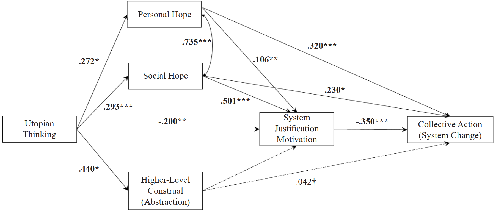

Lab 12: Mediation Analysis
Fabio Setti
PSYC 7804 - Regression with Lab
Today’s Packages and Data 🤗
The
lavaan package (Rosseel et al., 2024) is the most popular package to run SEM models in R. We will use it to run mediation analysis, which the SEM framework accommodates nicely.
We will look at the data in detail later, but for now run the line of code below. You should see a function called lav_summary() appear in your environment
lavaan gives a bit too much information when we run summary() (try ans see!), so I made a function that selects the information that we need if we are just running mediation.
Why lavaan for Mediation?
Before we begin, I would be remiss not to mention other packages for running mediation:
-
The
PROCESSmacro: PROCESS is a macro for SPSS, SAS, and R that runs mediation and moderation analysis. There is no package for it, so you need to run all the functions before using it. Aside from that, I find it to be less flexible thanlavaanfor specifying different models, as well as the online help and documentation for the R version being very limited.
-
The
mediationpackage (Tingley et al., 2019): This package implements the causal mediation framework described in Imai et al. (2010). It is a very flexible package, and it accommodates both multilevel mediation and non-linear mediation. Tingley et al. (2014) describe many of themediationpackage functionalities in detail. The one “problem” is that it is not very easy to specify multiple mediators and moderators. It is also more geared towards experimental designs.
lavaan is a package for structural equation modeling (SEM). SEM is a general framework that aims to explain how the observed correlation matrix among a set of variable arises by essentially running many regressions.
As we will see, mediation is nothing but two or more regression models. You certainly do not need SEM turn run mediation; however, lavaan makes it quite straightforward.
More on today’s data
Today’s data is adapted from the examples shown here. Let’s say that in our fictional study, participants were told about a crime committed by someone, and were given varying degrees of detail (detail) regarding the crime. The outcome, opinion, is how many months the participants believe the criminal should spend in prison.
-
gender: Binary variable indicating participant’s gender (0 = male, 1 = female). -
detail: How much information participants were given regarding the crime. (\(X\)) -
feeling: how severe participants felt the crime was after hearing the details. (\(M_1\)) -
impact: How negative the participants believed the details were.(\(M_2\)) -
opinion: How many months in prison the participants would give the criminal (measured last). (\(Y\))
Running a regresison in lavaan
Because of its flexibility, lavaan’s models require a specific syntax.
lm()
Call: lm(formula = opinion ~ detail, data = dat)
Coefficients:
Estimate Std. Error t value Pr(>|t|)
(Intercept) 18.4162 3.1027 5.936 1.29e-08 ***
detail 0.6508 0.0583 11.163 < 2e-16 ***
---
Signif. codes: 0 '***' 0.001 '**' 0.01 '*' 0.05 '.' 0.1 ' ' 1
Residual standard deviation: 8.432 on 198 degrees of freedom
Multiple R-squared: 0.3862
F-statistic: 124.6 on 1 and 198 DF, p-value: < 2.2e-16
AIC BIC
1424.38 1434.27 lavaan
First, we need to specify the model as a character. The syntax is similar to lm():
Path Diagrams
Path diagrams are useful for describing mediation models, as well as hypotheses in general when many variables are involved. Here are some examples:

- This path diagram represents a regression of \(X\) predicting \(Y\). the arrow-head arriving at the \(Y\) box means that \(Y\) is the dependent variable. The arrow represents the slope between \(X\) and \(Y\), hence representing their relationship.
- This path diagram represents a multiple regression of \(X_1\) and \(X_2\) predicting \(Y\). Two arrowheads arrive at \(Y\), so that implies that there are two predictors.
- Now we have added another dependent variable. Our path diagram now implies tow separate regression models. \(Z\) is a moderator, and it moderates the relation between \(X_1\) and \(Y_2\). Thus the equation predicting \(Y_2\) will be \(Y_2 \sim X_1 + X_2 + Z + X_2 \times Z\).
Remember that every arrow in the diagram corresponds to a slope
Mediation
If we hypothesize that a casual sequence exists among our variables, we test this hypothesis with mediation analysis.
The first diagram to the right describes a regression of \(Y\) predicting \(X\). It is helpful to name the paths when talking about mediation, so \(c\) represents the slope between \(X\) and \(Y\).
If we further hypothesize that an intermediate variable, \(M\), exists such that \(X\) causes \(M\), and \(M\) causes \(Y\), we get the second diagram on the right.


Importantly, you should see that arrowheads reach two boxes in the mediation diagram. This means that the mediation diagram implies 2 separate regression models:
M ~ XY ~ X + M
This means that \(X\) can influence \(Y\) directly through the \(c'\) path, but also indirectly by influencing \(M\) through the \(a\) path, and subsequently getting to \(X\) through the \(b\) path.
Direct and Indirect Effects
In mediation we can decompose the slope between \(X\) and \(Y\) into direct and indirect effect:

Total effect: \(c\)
the \(c\) path is the effect of \(X\) on \(Y\) when \(M\) is not accounted for.
Direct effect: \(c'\)
the \(c'\) (reads “c prime”) path is the effect of \(X\) on \(Y\) when \(M\) is accounted for.
Indirect effect: \(a \times b\)
\(a \times b\) represents the change in the effect of \(X\) on \(Y\) when \(M\) is accounted for. That is, how much \(Y\) is influenced by \(X\) indirectly through \(M\). (\(a \times b = c - c'\))
Why \(c = c'+ a\times b\)?
As always, this stuff does not come out of nowhere, and it’s actually quite quick to show why we say that \(c = c'+ a\times b\). We start with the 3 equations implied by the path diagrams:
\(Y = c \times X\)
\(M = a \times X\)
\(Y = c'\times X + b \times M\)
I will also point out that direct and indirect effects are mathematical concepts based on full and partial derivatives 🧐 You can find an example in Figure 8.4 of Chiang (1984), a popular math for economics introductory book. Although discussed in Hayes & Preacher (2010), it is my sense that this is actually not very well-known in Psychology, and that we focus so much on the “practical” interpretation of mediation that at some point we start misrepresenting and overemphasizing what mediation actually does 🤷
Mediation “By hand”
We can check that the math works out by running separate regressions. Let’s say that we think that
feeling (\(M_1\)) mediates the relation between detail (\(X\)) and opinion (\(Y\)).
Mediation in lavaan
Using
lavaan is more practical because it allows to specify more complex models in one go and also lets us generate confidence intervals through bootstrapping.
mod_med <- "opinion ~ c*detail + b*feeling
feeling ~ a*detail
indirect := a*b
total := c + a*b"
# may take 5 to 15 seconds to run (ignore warnings about convergence of bootstraps for regression models, the developer said so)
lav_med <- sem(mod_med, dat,
se = "boot", bootstrap = 2000,
parallel ="snow", ncpus = 4)
lav_summary(lav_med) lhs op rhs label est ci.lower ci.upper
1 opinion ~ detail c 0.424 0.299 0.558
2 opinion ~ feeling b 0.411 0.243 0.567
3 feeling ~ detail a 0.552 0.466 0.638
4 indirect := a*b indirect 0.227 0.130 0.325
5 total := c+a*b total 0.651 0.548 0.757
Some notes about the code:
-
We need to define the labels of the paths by using
*. -
After that, we can use the defined paths to calculate anything. We create new objects using estimated parameters by using
:=. Here I calculate the indirect and total effect. -
se = "boot"tells the function that we want bootstrapped confidence intervals. -
bootstrap = 2000requests 2000 bootstrap draws, but you can get away with 1000 usually. -
parallel ="snow"andncpus = 4are for splitting the work among 4 CPU cores, making the bootstrap procedure 4 times faster in theory. -
None of the confidence intervals contain 0, so all the paths are significant. The indirect effect is significant, so
feelingmediates the relation betweendetailandopinion.
NOTE: You will not see any intercepts in the results in this lab. For what we are doing, they are not very important as we only care about relations, the slopes.
lavaan omits intercepts by default in most models.
More on Interpretation and Causality
The interpretation of the indirect effect, \(.23\), is that when accounting for how severe participants thought the crime was (
feeling) after hearing details about the crime (detail), the effect of detail on how many months participants thought the criminal should spend in prison was reduced by \(.23\).
Mathematically, that line above is all mediation does. However, mediation tends to be associated with causality, as it was originally developed to describe causal chains of events. Let’s say that in our experiment we (1) give details about the crime, then (2) ask participants how severe they think the crime is, and finally (3) we ask them how many months they think the criminal should spend in jail.
Because we are running an experiment and all the measured variables happen in sequence, we should be able to claim that higher
detail causes higher feeling which in turn causes higher opinion (all slopes were positive).
However, mediation is often run on non-experimental data (e.g., survey at time 1 and time 2). In that case, claiming true causality more or less requires that you somehow control for all possible confounders (impossible!). There are more sophisticated statistical methods that get you closer to showing causality, but they all make some strong assumptions. So, if you run mediation on non-experimental data, I would steer clear of any causality claims, unless you really want to get into a nigh unwinnable argument with reviewer 2 on your paper 🙃
(apologies for the wall of text 😶)
Effect Sizes
Another advantage of using
lavaan is that we can seamlessly calculate effect sizes for mediation and get confidence intervals for them! Some effect sizes are:
Proportion of indirect to total effect: \(\frac{a\times b}{a\times b + c'} = \frac{a \times b}{c}\)
Proportion of indirect to direct effect: \(\frac{a\times b}{c'}\)
lhs op rhs label est ci.lower ci.upper
1 opinion ~ detail c 0.424 0.293 0.549
2 opinion ~ feeling b 0.411 0.258 0.567
3 feeling ~ detail a 0.552 0.460 0.643
4 indirect := a*b indirect 0.227 0.137 0.326
5 total := c+a*b total 0.651 0.548 0.755
6 ind_tot := indirect/total ind_tot 0.349 0.212 0.512
7 ind_dir := indirect/c ind_dir 0.536 0.269 1.047-
\(\frac{a \times b}{c} = .35\), implies that \(35\%\) of the effect of
detailonopinionwas mediated byfeeling. This measure ranges from \(0\) to \(1\). - \(\frac{a\times b}{c'} = .53\), implies that the direct effect is \(1 - .53 = 47\%\) larger than the indirect effect. This measure ranges from \(0\) to infinity.
These measures have limitations in small sample sizes, so see Preacher & Kelley (2011) for a detailed discussion.
Multiple mediators
Let’s assume that we also want to add
impact (\(M_2\)) as a mediator. That is, we believe that detail causes both feeling and impact, which in turn jointly cause opinion. The model implies 3 regressions. (I’ll start taking out the \(\times\) for shorter equations)
\[M_1 = a_1X\]
\[Y = c'X + b_1 M_1 + b_2 M_2\]
\[M_2 = a_2X\]
Thus, we have 2 indirect effects of detail on opinion.
-
Through
feeling: \(a_1 \times b_1\) -
Through
impact: \(a_2 \times b_2\)
And the total indirect effect of detail on opinion is:
\[a_1 \times b_1 + a_2 \times b_2\]
Multiple mediators in lavaan
We can update our
lavaan model to add \(M_2\):
lhs op rhs label est ci.lower ci.upper
1 opinion ~ detail c 0.421 0.269 0.581
2 opinion ~ feeling b1 0.410 0.243 0.571
3 opinion ~ impact b2 0.006 -0.146 0.173
4 feeling ~ detail a1 0.552 0.466 0.638
5 impact ~ detail a2 0.609 0.514 0.706
6 indirect1 := a1*b1 indirect1 0.226 0.128 0.328
7 indirect2 := a2*b2 indirect2 0.003 -0.086 0.106
8 total := c+a1*b1+a2*b2 total 0.651 0.548 0.757
The 2nd indirect effect, \(a_2 \times b_2\), is not significant, implying that
impact does not mediate the relation between detail and opinion.
Notice that now that we have two mediators, \(c'\) is the effect of
detail on opinion after accounting for both feeling and impact.
The total indirect effect, \(.23 + .01 = .24\), describes how much of the effect of
detail on opinion is mediated overall. You can also calculate it with total \(- c'\).
Moderated Mediation
We can add moderators to any of the paths in the model. Here we have our single mediator model, but we we hypothesize that the coefficients for the \(a\) and \(b\) paths should change depending on
gender. This model implies 2 regressions.
\[M = aX + z_1Z + a_zZX\]
\[Y = c'X + bM + z_2Z + b_zZM \]
Now, because we have a binary moderator where 0 = male and 1 = female:
Male equations: \(M = aX\) and \(Y = c'X + bM\)
We substitute \(0\) to any term with \(Z\), they just cancel out, and the indirect effect for male is simply \(a \times b\).
Female equations: \(M = aX + z_1 + a_zX\) and \(Y = c'X + bM + z_2 + b_zM\)
We substitute \(1\) to any term with \(Z\), the interaction terms are added to the the \(a\) and \(b\) paths. So, the indirect effect for female is \((a + a_z) \times (b + b_z)\).
Moderated Mediation in lavaan
lhs op rhs label est ci.lower ci.upper
1 opinion ~ detail c 0.421 0.289 0.551
2 opinion ~ feeling b 0.477 0.291 0.669
3 opinion ~ gender z2 6.716 -5.640 20.394
4 opinion ~ feeling:gender bz -0.136 -0.388 0.093
5 feeling ~ detail a 0.636 0.513 0.775
6 feeling ~ gender z1 12.491 3.125 22.215
7 feeling ~ detail:gender az -0.134 -0.305 0.030
8 indirect_female := (a+az)*(b+bz) indirect_female 0.172 0.055 0.294
9 indirect_male := a*b indirect_male 0.304 0.178 0.441-
To define interactions in
lavaan, we use the:operator. Unlikelm(), you have to specify all the terms manually. - The interaction terms are not significant according to the bootstrapped confidence intervals.
- As shown previously, once we add interaction terms, groups will have different slopes. If any of those slopes are involved in the indirect effect, the indirect effect will change by group.
Although the confidence intervals do not show significance for the interaction terms (\(a_z\) and \(b_z\)), if you hypothesized this model a priori, there may have been an additional hypothesis you would be interested in testing involving the indirect effects for the two groups 🧐 Can you think what that may be?
Concluding remark: Be Creative
Path models may seem a bit complicated 😵 It is always important to not lose sight of the why we learn about these more complex statistical techniques. For me, it is so that I can really answer the questions I am interested in.
Path models, as well as tools like
lavaan, is where things start to get interesting in my opinion.
For example, we could also ask about the moderated mediation model from before:
- Was there a meaningful difference between the indirect effect for males and females?

Example of an interesting path model I found here!
The value in mastering more advanced methods such as path analysis lies in the freedom that you gain as a researcher. You no longer have to fit your hypotheses and variables to some basic analysis such as a \(t\)-test of ANOVA; you can create a unique model that tests your unique and creative hypotheses 😄
References
Chiang, A. C. (1984). Fundamental Methods of Mathematical Economics (3rd edition). McGraw-Hill College.
Hayes, A. F., & Preacher, K. J. (2010). Quantifying and Testing Indirect Effects in Simple Mediation Models When the Constituent Paths Are Nonlinear. Multivariate Behavioral Research, 45(4), 627–660. https://doi.org/10.1080/00273171.2010.498290
Imai, K., Keele, L., & Tingley, D. (2010). A general approach to causal mediation analysis. Psychological Methods, 15(4), 309–334. https://doi.org/10.1037/a0020761
Preacher, K. J., & Kelley, K. (2011). Effect size measures for mediation models: Quantitative strategies for communicating indirect effects. Psychological Methods, 16(2), 93–115. https://doi.org/10.1037/a0022658
Rosseel, Y., Jorgensen, T. D., Wilde, L. D., Oberski, D., Byrnes, J., Vanbrabant, L., Savalei, V., Merkle, E., Hallquist, M., Rhemtulla, M., Katsikatsou, M., Barendse, M., Rockwood, N., Scharf, F., Du, H., Jamil, H., & Classe, F. (2024). Lavaan: Latent Variable Analysis (Version 0.6-19) [Computer software]. https://cran.r-project.org/web/packages/lavaan/index.html
Tingley, D., Yamamoto, T., Hirose, K., Keele, L., & Imai, K. (2014). Mediation: R Package for Causal Mediation Analysis. Journal of Statistical Software, 59, 1–38. https://doi.org/10.18637/jss.v059.i05
Tingley, D., Yamamoto, T., Hirose, K., Keele, L., Imai, K., Trinh, M., & Wong, W. (2019). Mediation: Causal Mediation Analysis (Version 4.5.0) [Computer software]. https://cran.r-project.org/web/packages/mediation/index.html
Lab 12: Mediation Analysis